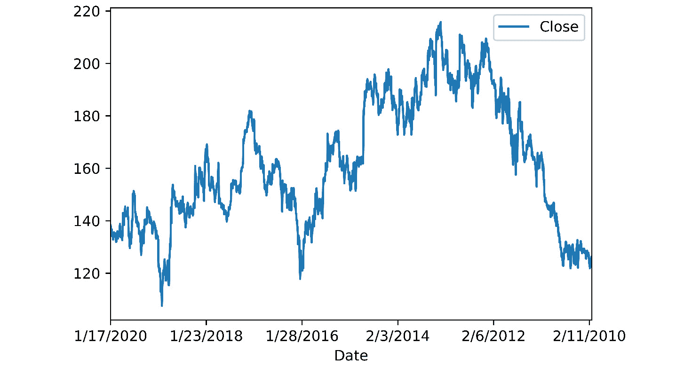
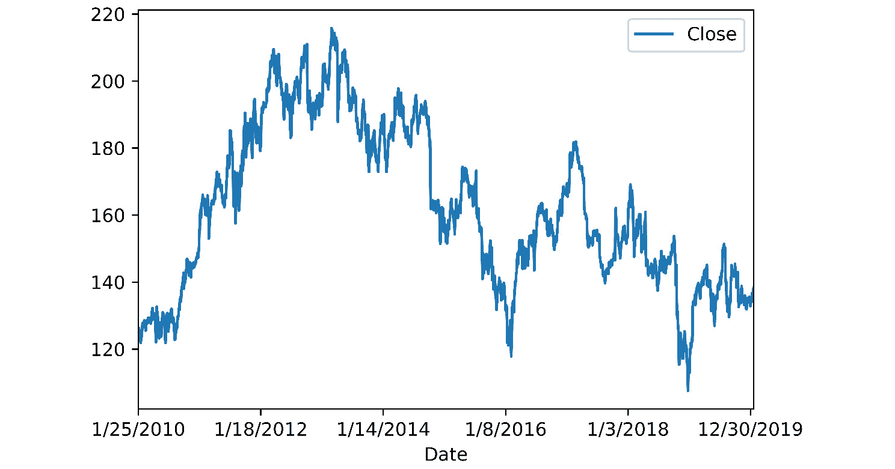
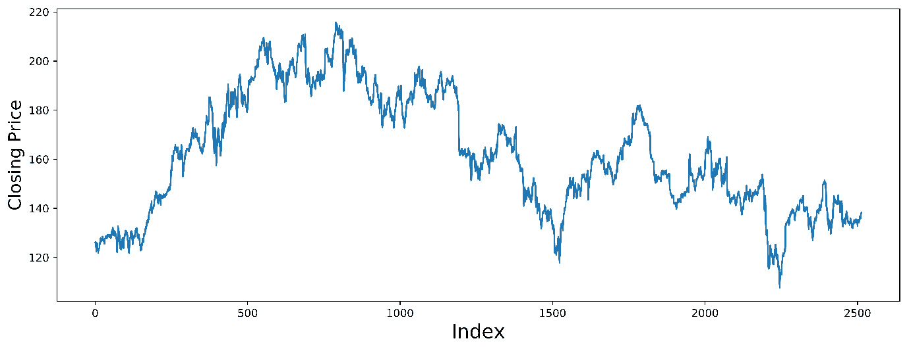
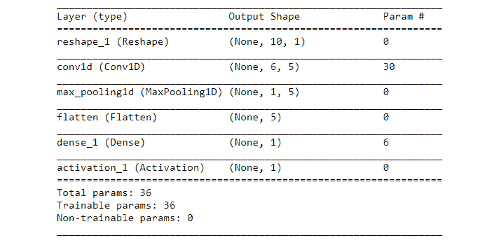
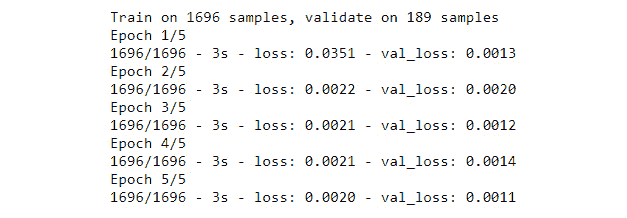
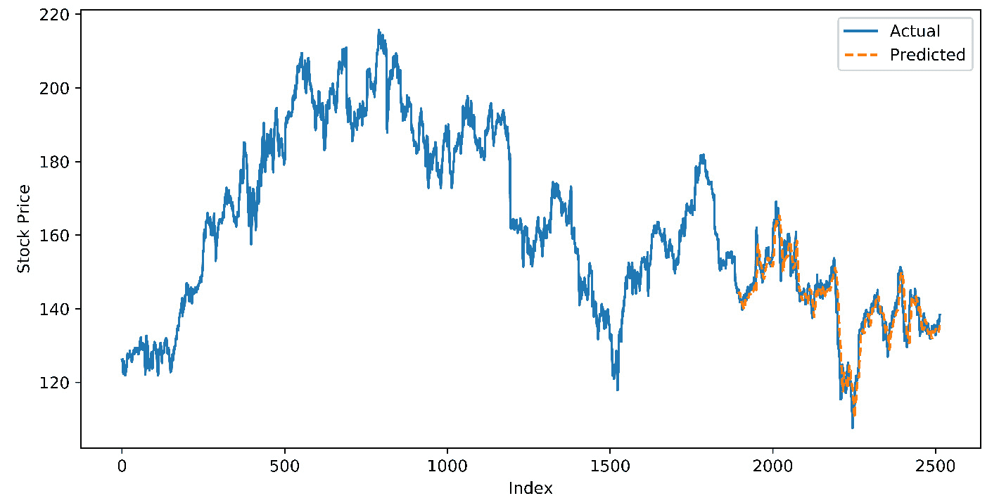
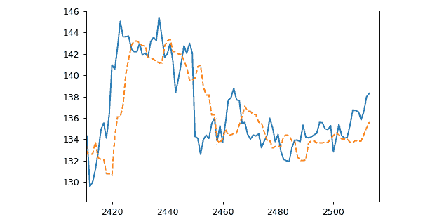
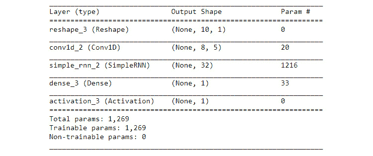
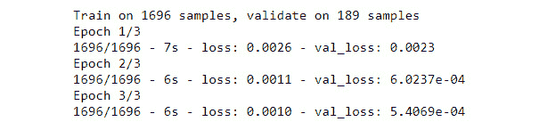
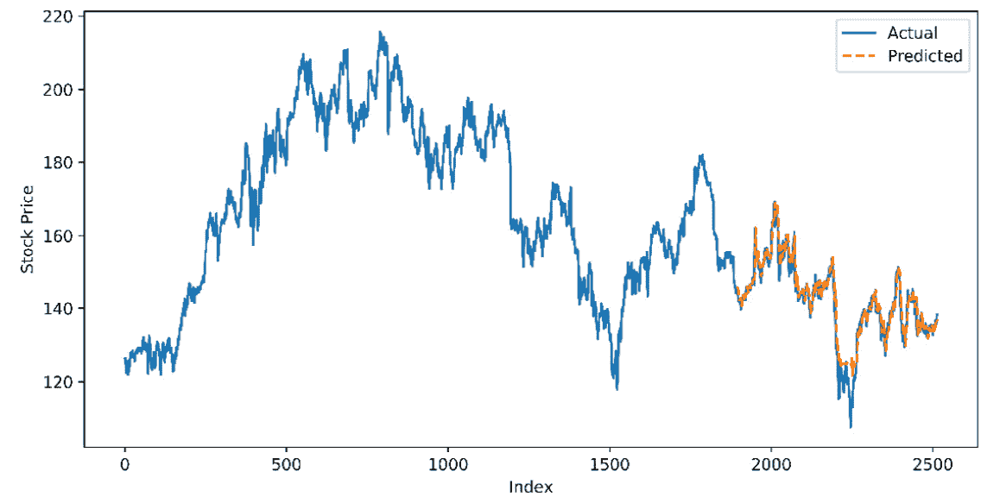

概观
在本章中，我们将在理解处理序列的注意事项后，实现基于深度学习的序列建模方法。我们将从递归神经网络 ( RNNs )开始，这是一种直观的序列处理方法，提供了最先进的结果。然后，我们将讨论和实现1D卷积作为另一种方法，并看看它如何与RNNs比较。我们还将在混合模型中结合RNNs和1D卷积。我们将在一个经典的序列处理任务——股票价格预测中使用所有这些模型。到本章结束时，你将能够熟练地实现序列的深度学习方法，特别是简单的RNN和1D卷积，并且你将为更高级的基于RNN的模型奠定基础。
简介
假设您正在处理文本数据，您的目标是构建一个模型来检查一个句子是否语法正确。考虑下面这句话:话？当顺序被这样解决的时候，就可以忽略了”。问题没说通吧？嗯，下面呢？“这个可以在忽略单词顺序的情况下解决吗？”
突然间，这篇文章变得完全有意义了。那么，关于处理文本数据，我们知道些什么呢？这个顺序很重要。
在评估一个给定的句子是否语法正确的任务中，顺序很重要。序列不可知的模型在这项任务上会非常失败。这项任务的性质要求你分析术语的顺序。
在前一章中，我们处理了文本数据，讨论了关于表示的想法并创建了我们自己的单词向量。文本和自然语言数据还有一个重要的特征——它们有一个序列。虽然文本数据是序列数据的一个例子，但是序列无处不在:从语音到股票价格，从音乐到全球气温。在这一章中，我们将以考虑元素顺序的方式开始处理顺序数据。我们将从RNNs开始，这是一种深度学习方法，它利用数据序列来提供对机器翻译、情感分析、推荐系统和时间序列预测等任务的深刻结果。然后，我们将研究对序列数据使用卷积。最后，我们将看到如何将这些方法结合到一个强大的深度学习架构中。同时，我们还将建立一个基于RNN的股票价格预测模型。
使用序列
让我们看另一个例子来更清楚地说明序列建模的重要性。任务是预测一家公司未来30天的股票价格。提供给你的数据是今天的股票价格。你可以在下面的图中看到这一点，其中y轴代表股票价格，x轴代表日期。这个数据够用吗？
图5.1:只有一天数据的股票价格
当然，一个数据点，即某一天的价格，不足以预测未来30天的价格。我们需要更多的信息。特别是，我们需要关于过去的信息——股票价格在过去几天/几个月/几年是如何变动的。所以，我们要求并得到了三年的数据:
图5.2:使用历史数据预测股价
这个好像有用多了吧？看过去的趋势和数据中的一些模式，我们可以对未来的股票价格做出预测。因此，通过查看过去的趋势，我们可以大致了解股票在未来几天的走势。没有顺序我们做不到。同样，顺序很重要。
在真实世界的用例中，比如说机器翻译，你需要考虑数据中的序列。序列不可知模型在某些任务中只能让你到此为止；您需要一种真正利用序列中包含的信息的方法。但是在谈论这些架构的工作之前，我们需要回答一个重要的问题:到底什么是序列？
虽然字典中的"序列"的定义是不言自明的，但是我们需要能够自己识别序列，并决定我们是否需要考虑该序列。要理解这个想法，让我们回到我们看到的第一个例子:“单词？当忽略单词的顺序时，可以解决忽略对的问题吗？
当你混淆了有意义的句子文本的术语时，它就失去了意义，并丢失了所有/大部分信息。对于一个序列来说，这是一个简单而有效的测试:如果你把元素弄乱了，它还有意义吗？如果答案是“不”，那么你手头就有一个序列。虽然序列无处不在，但这里有一些序列数据的例子:语言、音乐、电影脚本、音乐视频、时间序列数据(股票价格、商品价格等)以及病人的生存概率。
时间序列数据–股票价格预测
我们将开始研究我们自己的预测股票价格的模型。股票价格预测任务的目标是建立一个模型，该模型可以根据历史价格预测第二天的股票价格。正如我们在上一节中看到的，该任务要求我们考虑数据中的顺序。我们将预测苹果公司的股票价格。
注意
我们将使用来自纳斯达克网站的苹果历史股票数据的清理版本:https://www . Nasdaq . com/market-activity/stocks/AAPL/historical。数据集可以从以下链接下载:https://packt.live/325WSKR。
确保将文件(AAPL.csv)放在您的工作目录中，并为代码创建一个新的Jupyter笔记本。在一个Jupyter笔记本中运行练习和主题部分中的所有代码是很重要的。
让我们从理解数据开始。我们将加载所需的库，然后加载和绘制数据。您可以使用以下命令加载必要的库，并使用cell magic命令(%matplotlib inline)以内联方式绘制图像:
import pandas as pd, numpy as np import matplotlib.pyplot as plt %matplotlib inline
接下来，我们将使用pandas的read_csv()方法将.csv 文件加载到数据帧(inp0)中，并使用Pandas数据帧的head方法查看一些记录:
inp0 = pd.read_csv('AAPL.csv')
inp0.head()
您应该得到以下输出:
图5.3:AAPL数据集的前五条记录
我们可以看到，第一个记录是2020年1月17日，是数据中最近的日期(写这本书时的最新数据)。按照pandas数据帧的惯例，第一条记录的索引为0(索引只是行的标识符，每一行都有一个索引值)。Open是指某只股票在交易开始时的价值，High是指该股票一天内的最高价值，Low和Close分别代表最低价和收盘价。我们也有当天的交易量。
让我们使用以下命令查看数据集的最后几条记录:
inp0.tail()
记录如下所示:
图5.4:AAPL数据集底部的五条记录
从前面的表格中，我们可以看到从2010年1月25日到2020年1月17日每天的开盘价、最高价、最低价和收盘价，以及交易量。就我们的目的而言，我们关心的是收盘价。
练习5.01:可视化我们的时间序列数据
在本练习中，我们将从数据中提取收盘价，执行必要的格式化，并绘制时间序列以更好地理解数据。确保您已经通读了前面的部分，加载了数据，并导入了相关的库。执行以下步骤来完成本练习:
- 如果您还没有导入必要的库，请使用下面的命令:
import pandas as pd, numpy as np import matplotlib.pyplot as plt %matplotlib inline
- 从GitHub(https://packt.live/325WSKR)下载名为
AAPL.csv的文件，并加载到数据帧:inp0 = pd.read_csv('AAPL.csv') - Plot the
Closecolumn as a line plot to see the pattern using theplotmethod of the DataFrame, specifying theDatecolumn as the X-axis:inp0.plot("Date", "Close") plt.show()该图如下，X轴显示收盘价，Y轴代表日期:
图5.5:收盘价图
从图中，我们可以看到最新的值首先被绘制出来(在左边)。为了方便绘图和处理，我们将反转数据。我们将通过按索引(记住最新记录的索引是0)降序排列数据帧来实现这一点。
- Reverse the data by sorting the DataFrame on the index. Plot the closing price again and supply
Dateas the X-axis:inp0 = inp0.sort_index(ascending=False) inp0.plot("Date", "Close") plt.show()收盘价将绘制如下:
图5.6:反转数据后的趋势
这和预期的一样有效。我们可以看到，最新的值绘制在右侧。
- 从数据帧中提取
Close的值作为一个numpy数组，使用array.reshape(-1,1):ts_data = inp0.Close.values.reshape(-1,1)
重新整形以指定一列 - Plot the values as a line plot using matplotlib. Don't worry about marking the dates; the order of the data is clear (matplotlib will use an index instead, beginning with 0 for the first point):
plt.figure(figsize=[14,5]) plt.plot(ts_data) plt.show()
结果趋势如下，X轴表示指数，Y轴表示收盘价:

图5.7:每日股价趋势
这就是我们的序列数据的样子。没有连续明确的趋势；价格上涨了一段时间，之后股票涨跌互现。这种模式并不简单。我们可以看到，在较短的持续时间内(可能是每月)，存在一定的季节性。总的来说，模式相当复杂，在我们可以利用的数据中没有明显和容易识别的周期性。这个复杂的序列就是我们将要处理的——使用历史值预测一天的股票价格。
注意
要访问该特定部分的源代码，请参考https://packt.live/2ZctArW。
你也可以在https://packt.live/38EDOEA在线运行这个例子。您必须执行整个笔记本才能获得想要的结果。
在本练习中，我们加载了股票价格数据。为了便于处理，在反转数据后，我们提取了收盘价(Close列)。我们绘制数据以直观地检查数据中的趋势和模式，承认数据中没有任何明显的模式可供我们利用。
注意
是否将数据视为序列也取决于手头的任务。如果任务不需要序列中的信息，那么也许你不需要这样对待它。
在这一章中，我们将把重点放在需要利用数据中的序列/从中受益匪浅的任务上。这是怎么做到的？我们将在下面几节中找到答案，我们将讨论RNNs背后的直觉和方法。
递归神经网络
我们的大脑是如何处理一个句子的？让我们试着理解当我们阅读一个句子时，我们的大脑是如何处理它的。你在一个句子中看到一些术语，你需要识别句子中包含的情绪(积极的，消极的，中性的)。让我们来看第一个术语——“I”:
图5.8第一学期的情绪分析
I“是中性的，所以我们的分类(中性)是恰当的。让我们看看另一个术语:
"I" is neutral, so our classification (neutral) is appropriate. Let's look at another term:
图5.9:两个术语的情感分析
使用术语“can't”，我们需要更新我们对情绪的评估。“I”和“can't”通常具有负面含义，因此我们当前的评估更新为“负面”，并标有叉号。让我们看看接下来的几个单词:
With the term "can't," we need to update our assessment of the sentiment. "I" and "can't" together typically have a negative connotation, so our current assessment is updated as "negative" and is marked with a cross. Let's look at the next couple of words:
图5.10:包含四个术语的情感分析
在这两个附加术语之后，我们维持我们的预测，这个句子有负面情绪。根据目前所有的信息，“I can't find any”是一个很好的评估。让我们看看最后一个术语:
图5.11:添加了最后一个术语的情感分析
随着最后一个学期的到来，我们的预测完全被推翻了。突然，我们现在同意这是一个积极的表达。你的评估随着每个新学期的到来而更新，不是吗？你的大脑收集手头所有的信息并做出评估。随着新学期的到来，到目前为止的评估都会更新。这个过程正是RNN模仿的。
那么，是什么让一个网络“轮回”？关键的想法是不仅处理新的信息，而且保留到目前为止收到的信息。在RNNs中，这是通过使输出不仅依赖于新的输入值，还依赖于当前的“状态”(到目前为止捕获的信息)来实现的。为了更好地理解这一点，让我们看看标准前馈神经网络将如何处理一个简单的句子，并将其与RNN将如何处理它进行比较。
考虑对输入句子“生活是美好的”进行情感分类(积极或消极)的任务在标准前馈网络中，对应于句子中所有术语的输入被一起传递给网络。如下图所示，输入数据是已经传递到网络隐藏层的句子中所有术语的组合表示。将所有术语放在一起考虑，将句子中的情感归类为积极的:
图5.12:用于情感分类的标准前馈网络
相比之下，RNN会逐字逐句地处理句子。如下图所示，术语“寿命的第一个输入在时间 t=0 时被传递给隐藏层。隐藏层提供一些输出值，但这不是句子的最终分类，而是隐藏层的中间值。尚未进行分类:
图5.13: RNN在t=0时处理第一项
在时间 t=1 处理下一个术语“is”)及其相应的输入，然后馈送到隐藏层。如下图所示，这一次，隐藏层还考虑了隐藏层在时间 t=0 的中间输出，本质上是对应于术语life的输出隐藏层的输出现在将有效地考虑新输入(“is”)和前一时间步的输入(“life”):
图5.14:t = 1时的网络
在时间步长 t=1 之后，隐藏层的输出有效地包含来自术语“life”和“is”的信息，有效地保存对应于迄今输入的信息。在时间 t=2 时，对应于下一项的数据，即“good，被送入隐藏层。下图显示了隐藏层使用这个新的输入数据，以及从时间 t=1 起隐藏层的输出，来提供输出。这个输出有效地考虑了到目前为止的所有输入，按照它们在输入文本中出现的顺序。当整个句子被处理时，对句子进行最终分类(在本例中为“肯定”):
图5.15:当整个句子被处理时，t=2时的输出
RNNs的一个常见部分是使用“循环”，如下图所示。对于循环，我们指的是一种保留包含目前信息的“状态”值并将其与新输入一起使用的机制:
图5.16:用循环描述的RNNs
如下图所示，只需制作隐藏层的虚拟副本，并在下一个时间步使用，即在处理下一个输入时使用。如果一个词一个词地处理一个句子，这将意味着，对于每个词，保存隐藏层输出(时间 t-1 ，并且当新词在时间 t 出现时，处理隐藏层输出(时间 t )及其先前状态(时间 t-1 )。这就是事情的全部:
图5.17:复制隐藏层状态
为了使RNNs的工作更加清晰，让我们从图5.15 中展开视图，在那里我们看到了输入句子是如何被一个接一个地处理的。我们将理解RNN与标准前馈网络有多么不同。
虚线框突出显示的部分应该为您所熟悉——它代表带有隐藏层的标准前馈网络(虚线矩形)。使用前馈权重WF，输入的数据从左到右流过网络的深度，以提供输出——就像在标准前馈网络中一样。重复出现的部分是数据自下而上的流动，跨越时间步骤:
图。5.18: RNN建筑
对于所有隐藏层，输出也沿着时间维度传播到下一个时间步长。或者，对于时间步长 t 和深度 l 的隐藏层，输入如下:
来自前一隐藏层的数据在同一时间步
- 前一时间步中来自同一隐藏层的数据
- 仔细看一下上图，理解RNN的工作原理。隐藏层的输出可以导出如下:
Have a good look at the preceding diagram to understand the workings of an RNN. The output from the hidden layer can be derived as follows:
图5.19:计算RNN中的激活
公式的第一部分， W F(l)at(l-1)，对应于前馈计算的结果，即将前馈权重( W F)应用于前一层的输出( a t(l-1))。第二部分对应于递归计算，即将递归权重( W R(l))应用于来自前一时间步( a t-1(l))的同一层的输出。此外，与所有神经网络层一样，还有一个偏差项。在应用激活函数时，该结果成为在时间 t 和深度 l ( a t(l))的层的输出。
为了使想法更具体，让我们使用TensorFlow实现简单RNN的前馈步骤。
练习5.02:使用TensorFlow实现简单RNN的向前传递
在本练习中，我们将使用TensorFlow在具有一个隐藏层和两个时间步长的简单RNN中执行一次操作。通过执行一遍，我们意味着在时间步长 t=0 计算隐藏层的激活，然后使用该输出以及在 t=1 的新输入(应用适当的递归和前馈权重)来获得在时间 t=1 的输出。为本练习创建一个新的Jupyter笔记本，并执行以下步骤:
导入TensorFlow和NumPy。使用numpy设置随机种子0以使结果可重复:
import numpy as np import tensorflow as tf np.random.seed(0) tf.random.set_seed(0)
- 在每个时间步，我们将有两个输入。让我们称他们为
xt0和xt1。 - Define the
num_inputsandnum_neuronsconstants that will be holding the number of inputs (2) and the number of neurons in the hidden layer (3), respectively:num_inputs = 2 num_neurons = 3
请注意循环权重的维度——它是一个正方形矩阵，行数/列数与隐藏层中的神经元数一样多。
- Define the variables for the weight matrices. We need two of them – one for the feedforward weights and another for the recurrent weights. Initialize them randomly:
Wf = tf.Variable(tf.random.normal\ (shape=[num_inputs, num_neurons])) Wr = tf.Variable(tf.random.normal\ (shape=[num_neurons, num_neurons]))添加偏差变量(以使激活更好地适应数据)，零的数量与隐藏层中神经元的数量一样多:
b = tf.Variable(tf.zeros([1,num_neurons]))
- 创建数据–三个示例为
xt0(两个输入，三个示例)作为[[0,1], [2,3], [4,5]]，xt1作为[[100,101], [102,103], [104,105]]–作为float32类型的numpy数组(与TensorFlow默认浮点表示的dtype一致):xt0_batch = np.array([[0,1],[2,3],[4,5]]).astype(np.float32) xt1_batch = np.array([[100, 101],[102, 103],\ [104,105]]).astype(np.float32)
- 注意，在时间步长0，这里没有循环权重；它只有在第一个时间步之后才起作用。
- Define a function named
forward_passto apply a forward pass to the given data, that is,xt0,xt1. Usetanhas the activation function. The output at t=0 should be derived fromWfandxt0alone. The output at t=1 must useyt0with the recurrent weights,Wf, and use the new input,xt1. The function should return outputs at the two time steps:def forward_pass(xt0, xt1): yt0 = tf.tanh(tf.matmul(xt0, Wf) + b) yt1 = tf.tanh(tf.matmul(yt0, Wr) + tf.matmul(xt1, Wf) + b) return yt0, yt1使用创建的数据(
xt0_batch、xt1_batch)调用forward_pass函数，执行正向传递，并将输出放入变量yt0_output和yt1_output:yt0_output, yt1_output = forward_pass(xt0_batch, xt1_batch)
- t=0 的输出如下所示。请注意，由于TensorFlow进行了随机初始化，因此您的结果可能会略有不同:
- Print the output values,
yt0_outputandyt1_output, using theprintfunction from TensorFlow:tf.print(yt0_output)
t=1 gets处的输出打印如下。同样，由于初始值是随机的，所以这可能会稍有不同，但是所有的值都应该接近1或-1:
[[-0.776318431 -0.844548464 0.438419849] [-0.0857750699 -0.993522227 0.516408086] [0.698345721 -0.999749422 0.586677969]]
- Now, print the values of yt1_output:
tf.print(yt1_output)
我们可以看到，在时间 t=1 的最终输出是一个3×3矩阵——代表三个数据实例的隐藏层中三个神经元的输出。
[[1 -1 0.999998629] [1 -1 0.999998331] [1 -1 0.999997377]]
注意
要访问该特定部分的源代码，请参考https://packt.live/2ZctArW。
你也可以在https://packt.live/38EDOEA在线运行这个例子。您必须执行整个笔记本才能获得想要的结果。
注意
尽管已经为
numpy和tensorflow设置了种子以获得可重复的结果，但结果变化的原因还有很多。虽然您看到的值可能不同，但您看到的输出应该与我们的基本一致。在本练习中，我们在一个简单的RNN中手动向前传递了两个时间步长。我们看到，它只是使用前一个时间步的隐藏层输出作为下一个时间步的输入。现在，你真的不需要手动执行任何这些——Keras使制作rnn变得非常简单。我们将使用Keras作为我们的股票价格预测模型。
在练习5.2 、中，使用TensorFlow 实现简单RNN的向前传递，我们在每个时间步使用两个输入，并且在每个时间步有一个输出。但并不总是这样。rnn具有很大的灵活性。首先，您可以有单个/多个输入以及输出。此外，您不需要在每个时间步都有输入和输出。
您可能拥有以下内容:
不同时间步的输入，仅在最后一步输出
- 具有多个时间步长输出的单个输入
- 多个时间步长的输入和输出(长度相等或不等)
- RNN体系结构有巨大的灵活性，这种灵活性使它们非常通用。让我们来看看一些可能的架构以及一些潜在的应用:
图5.20:多步输入，最后一步输出
进行预测时，可以在多个时间步长上输入，例如在一个序列中(或一个或多个输入)，仅在最后一个时间步长上输出，如上图所示。在每个时间步长，隐藏层对来自前一层的前馈输出和来自前一时间步长的副本的递归输出进行操作。但是没有对中间时间步长的预测。只有在处理了整个输入序列之后，才能进行预测——与我们在图中看到的过程相同。5.15(命好的例子)。文本分类应用广泛使用这种架构——将情感分类为正面/负面，将电子邮件分类为垃圾邮件/火腿，识别评论中的仇恨言论，自动调节购物平台上的产品评论，等等。
时间序列预测(例如，股票价格)也利用这种体系结构，处理过去的几个值来预测单个未来值:
图5.21:单步输入，多步输出
上图说明了另一种体系结构，其中输入是在单个步骤中接收的，但输出是在多个时间步骤中获得的。围绕生成的应用程序——为给定的关键字生成图像、为给定的关键字生成音乐(作曲家)或为给定的关键字生成一段文本——都是基于这种架构的。
您还可以在每个时间步长有一个与输入相对应的输出，如下图所示。本质上，这个模型将帮助您对序列的每个传入元素进行预测。这种任务的一个例子是术语的词性标注——对于句子中的每个术语，我们确定该术语是名词、动词、形容词还是另一种词性。
自然语言处理的另一个例子是命名实体识别 ( NER )，其中，对于文本中的每个术语，目标是检测它是否表示命名实体，然后如果它表示，则将其分类为组织、个人、地点或另一类别:
图5.22:每个时间步的多个输出
在以前的架构中，我们对每个输入元素都有一个输出。在许多情况下，这是行不通的，我们需要一个输入和输出长度不同的架构，如下图所示。想想语言之间的翻译。英语中的一个句子在德语翻译中一定有相同数量的术语吗？答案往往是否定的。对于这种情况，下图中的架构提供了“编码器”和“解码器”的概念对应于输入序列的信息存储在编码器网络的最终隐藏层中，该层本身具有循环层。
该表示/信息由解码器网络处理(同样，这是循环的)，解码器网络输出翻译后的序列:
图5.23:输入和输出长度不同的架构
对于所有这些架构，您还可以有多个输入，使RNN模型更加通用。例如，在进行股票价格预测时，您可以提供多个时间步长的多个输入(公司以前的股票价格、股票交易指数、原油价格以及您认为相关的任何信息)，RNN将能够容纳并利用所有这些信息。这是rnn非常受欢迎的原因之一，它改变了我们今天处理序列的方式。当然，你还可以添加深度学习的所有预测能力。
对于我们的股票价格预测任务，我们将通过使用过去几天的数据来预测给定股票在任何一天的价值，并将其提供给RNN。这里，我们有单个输入(单个要素)、多个时间步长和单个输出。我们将采用图5.20 中的RNN架构。
注意
继续使用我们在本章中绘制时间序列数据的Jupyter笔记本(除非另有说明)。
到目前为止，我们已经查看了数据，并了解了我们正在处理的问题。接下来，我们需要为模型准备数据。第一步是创建数据的训练测试分割。由于这是时间序列数据，我们不能只是随机挑选点分配给我们的训练和测试集。我们需要保持顺序。对于时间序列数据，我们通常保留数据的第一部分用于训练，并将数据的最后一部分用于测试集。在我们的例子中，我们将把前75%的记录作为我们的训练数据，后25%作为我们的测试数据。以下命令将帮助我们获得所需的列车组的大小:
这是我们将在训练集中拥有的记录数量。我们可以按如下方式分离集合:
train_recs = int(len(ts_data) * 0.75)
列车和测试装置的长度如下:
train_data = ts_data[:train_recs] test_data = ts_data[train_recs:] len(train_data), len(test_data)
接下来，我们需要缩放股票数据。为此，我们可以使用sklearn中的最小-最大缩放器。MinMaxScaler缩放数据，使其在0和1(包括0和1)之间的范围内——数据中的最高值被映射到1。我们将在训练数据上拟合和转换缩放器，并且仅转换测试数据:
(1885, 629)
下一个重要步骤是格式化数据，以获得每个实例的“特性”。我们需要定义一个“回望期”，即我们希望用来预测下一个值的历史天数。下面的代码将帮助我们定义一个函数，该函数返回y(一天的股票价格)和X(回望期内每天的价值)的目标值:
from sklearn.preprocessing import MinMaxScaler scaler = MinMaxScaler() train_scaled = scaler.fit_transform(train_data) test_scaled = scaler.transform(test_data)
该函数接收一个数据集(确切地说，是一系列数字),并为提供的回看添加尽可能多的历史值。它通过移动系列来实现，每次都将其连接到结果。该函数将当天的股票价格作为 y 返回，并将回望期的值(移位值)作为我们的特征。现在，我们可以定义一个回望期，并查看将该函数应用于数据的结果:
def get_lookback(inp, look_back):
y = pd.DataFrame(inp)
dataX = [y.shift(i) for i in range(1, look_back+1)]
dataX = pd.concat(dataX, axis=1)
dataX.fillna(0, inplace = True)
return dataX.values, y.values
尝试以下命令来检查结果数据集的形状:
look_back = 10 trainX, trainY = get_lookback(train_scaled, look_back=look_back) testX, testY = get_lookback(test_scaled, look_back= look_back)
输出如下所示:
trainX.shape, testX.shape
正如所料，每个示例有10个特性，对应于过去10天。我们有训练数据和测试数据的历史记录。至此，数据准备工作完成。在我们根据这些数据构建我们的第一个RNN之前，让我们再多了解一下RNNs。
((1885, 10), (629, 10))
注意
我们在这里创建的trainX和trainY变量将在接下来的练习中使用。所以，确保你在同一个Jupyter笔记本上运行本章的代码。
要计算RNN图层中的参数数量，让我们来看看一个通用的隐藏图层:
To calculate the number of parameters in an RNN layer, let's take a look at a generic hidden layer:
图5.24:重现层的参数

隐藏层在同一时间步从先前的隐藏层获取输入，也从先前的时间步从其自身获取输入。如果RNN层的输入层(之前的隐藏层)是m维的，我们将需要 n×m 个权重/参数，其中 n 是RNN层中神经元的数量。对于输出层，如果权重为 n×k ，则为维度，如果 k 则为输出的维度。递归权重始终是维度的方阵n×n–因为输入的维度与图层本身相同。
因此，任何RNN层的参数数量将是n 2 + nk + nm，其中我们有如下:
n:隐藏(当前)层的尺寸
现在应该清楚如何在RNN中转发传播信息。如果不是，请参考图5.19 中的等式。新信息沿着网络的深度以及时间步长传播，在每一步使用先前的隐藏状态。培训注册护士的另外两个关键方面如下:
定义损失:我们知道如何为标准神经网络定义损失；也就是说，它只有一个输出。对于RNNs，在输出端有单个时间步长的情况下(例如，文本分类)，损耗的计算方式与标准神经网络相同。但是我们知道，RNNs可以在多个时间步长上输出(例如，在词性标注或机器翻译中)。如何跨多个时间步长定义损失？一个非常简单和流行的方法是总结所有步骤的损失。整个序列的损失计算为所有时间步长的损失总和。
- 注意
- Backpropagation: Backpropagation of the errors now needs us to work across time steps, since there is a time dimension as well. We have already seen that loss is defined as the sum of loss at each time step. The usual chain rule application helps us out; we also need to sum the gradients at each time step over time. This has a very catchy name: Backpropagation Through Time (BPTT).
对训练过程和相关数学的详细论述超出了本书的范围。基本概念是我们理解所涉及的考虑事项所需要的。
现在，让我们继续使用Keras构建我们的第一个RNN模型。我们将在本章中介绍Keras中提供的两个新层，并了解它们的功能和用途。我们需要的第一层是
SimpleRNN层。
要从Keras导入所有必需的实用程序，可以使用以下代码:
SimpleRNN层是最简单的普通RNN层。它接受一个序列，神经元的输出作为输入反馈回来。此外，如果我们想要在此RNN图层之后添加另一个RNN图层，我们可以选择将序列作为输出返回。让我们来看看一些选项。
from tensorflow.keras.models import Sequential from tensorflow.keras.layers \ import SimpleRNN, Activation, Dropout, Dense, Reshape
?SimpleRNN:simple rnn层的签名如下:
- 图5.25:simpler nn层的签名
我们可以看到，该层还具有Keras中常规/标准层的所有常用选项，允许您指定激活、初始化、删除等。
RNN图层期望输入数据采用特定的格式。由于我们可以将输入数据作为多个要素的多个时间步长，因此输入格式应该使规范明确。预期的输入形状为(look_back，要素数)。它期望矩阵中的每个特征都有相同的回看历史。
在我们的例子中，我们有一个特征，回顾周期是10。因此，预期的输入形状是(10，1)。请注意，我们目前将每个输入作为10个值的列表，因此我们需要确保它被理解为(10，1)。为此，我们将使用整形图层。整形图层需要输入形状和目标形状。让我们通过实例化和添加一个整形层来开始构建我们的模型。
注意
尽管我们已经为numpy和tensorflow设置了种子，以获得可重复的结果，但由于有更多的变化原因，您可能会得到与我们不同的结果。这适用于我们在这里使用的所有模型。虽然您看到的值可能不同，但您看到的输出应该与我们的基本一致。如果模型性能差异很大，您可能需要调整历元数——原因是神经网络中的权重是随机初始化的，因此您和我们的起点可能会略有不同，当训练不同的历元数时，我们可能会达到相似的位置。
练习5.03:建立我们的第一个简单的RNN模型
在本练习中，我们将构建第一个简单的RNN模型。我们将有一个重塑层，然后是一个SimpleRNN层，然后是一个密集层的预测。我们将使用之前创建的trainX和trainY的格式化数据，以及来自Keras的初始化层。执行以下步骤来完成本练习:
让我们从Keras收集必要的工具。使用下面的代码来做到这一点:
from tensorflow.keras.models import Sequential from tensorflow.keras.layers \ import SimpleRNN, Activation, Dropout, Dense, Reshape
- 实例化
Sequential模型:model = Sequential()
- 请注意
Reshape层的参数。正如我们所讨论的，目标形状是(lookback, 1)。 - Add a
Reshapelayer to get the data in the format (look_back,1):model.add(Reshape((look_back,1), input_shape = (look_back,)))
添加一个有32个神经元的
SimpleRNN层，指定输入形状。注意，我们采用了任意数量的神经元，所以欢迎您使用这个数量进行实验:model.add(SimpleRNN(32, input_shape=(look_back, 1)))
- 添加一个尺寸为1的
Dense图层:model.add(Dense(1))
- 添加一个线性激活的
Activation层:model.add(Activation('linear')) - 用
adam优化器和mean_squared_error编译模型(因为我们预测的是一个实数值):model.compile(loss='mean_squared_error', optimizer='adam')
- 该摘要将打印如下:
- Print a summary of the model:
model.summary()
图5.26:simpler nn模型总结
注意SimpleRNN层中的参数数量。结果正如我们所料。
注意
要访问该特定部分的源代码，请参考https://packt.live/2ZctArW的。
你也可以在https://packt.live/38EDOEA在线运行这个例子。您必须执行整个笔记本才能获得想要的结果。
在这个练习中，我们使用单层普通RNN架构定义了我们的模型架构。与我们之前为图像数据建立的模型相比，这确实是一个非常简单的模型。接下来，让我们看看这个模型如何执行手头的任务。
我们已经定义并编译了模型。下一步是通过在训练数据上拟合模型来学习模型参数。我们可以通过使用1的批量大小和10%的验证分割，以及通过只训练三个时期来做到这一点。我们尝试了不同的时期值，发现模型在三个时期给出了最好的结果。以下代码将帮助我们使用fit()方法训练模型:
输出如下所示:
model.fit(trainX, trainY, epochs=3, batch_size=1, \
verbose=2, validation_split=0.1)
图5.27:培训输出
我们可以看到损失已经很低了。我们在这里训练模型，没有做任何仔细的超参数调整。您可以看到，对于这个数据集，三个历元就足够了，我们在这里尽量保持简单。模型训练完成后，我们现在需要评估训练集和测试集的性能。
为了使我们的代码更加模块化，我们将定义两个函数——一个用于打印训练集和测试集的均方根误差，另一个函数用于绘制测试数据的预测以及数据中的原始值。让我们首先定义我们的第一个函数，使用来自math的sqrt函数来获得由模型的evaluate方法提供给我们的mean_squared_error的根。该函数定义如下:
为了查看我们的模型做得如何，我们需要向这个方法提供我们的model对象。这可以通过以下方式完成:
import math
def get_model_perf(model_obj):
score_train = model_obj.evaluate(trainX, trainY, verbose=0)
print('Train RMSE: %.2f RMSE' % (math.sqrt(score_train)))
score_test = model_obj.evaluate(testX, testY, verbose=0)
print('Test RMSE: %.2f RMSE' % (math.sqrt(score_test)))
输出如下所示:
get_model_perf(model)
这些值看起来相当低(诚然，我们在这里没有真正的基准，但是考虑到我们的结果值在0到1之间，这些值看起来确实不错)。但这是一个汇总统计，我们已经知道数据中的值变化很大。一个更好的想法是直观地评估性能，将测试期间的实际值与预测值进行比较。以下代码将帮助我们定义一个为给定模型对象绘制预测的函数:
Train RMSE: 0.02 RMSE Test RMSE: 0.03 RMSE
首先，该函数对测试数据进行预测。由于此数据是按比例缩放的，因此在绘制之前，我们应用逆变换将数据恢复到其原始比例。该函数将实际值绘制为实线，将预测值绘制为虚线。让我们使用这个函数来直观地评估我们的模型表现如何。我们只需将模型对象传递给plot_pred函数，如以下代码所示:
def plot_pred(model_obj):
testPredict = \
scaler.inverse_transform(model_obj.predict(testX))
pred_test_plot = ts_data.copy()
pred_test_plot[:train_recs+look_back,:] = np.nan
pred_test_plot[train_recs+look_back:,:] = \
testPredict[look_back:]
plt.plot(ts_data)
plt.plot(pred_test_plot, "--")
显示的图形如下:
%matplotlib inline plt.figure(figsize=[10,5]) plot_pred(model)
The plot that's displayed is as follows:
图5.28:预测与实际
上图显示了模型预测值(虚线)与实际值(实线)的对比。看起来很不错，不是吗？在这个比例下，预测值和实际值之间的重叠看起来非常高——预测曲线几乎完全符合实际值。表面看来，这个模型确实做得很好。
但在祝贺自己之前，让我们回忆一下我们工作的粒度——我们正在用10点来预测第二天的股票价格。当然，在这个尺度上，即使我们取简单的平均值，这个图看起来也会令人印象深刻。为了更好地理解这一点，我们需要放大很多。让我们放大，这样各个点就可见了。我们将使用%matplotlib notebook单元格魔术命令在图表中进行交互，并放大与图表中的指数2400–2500相对应的值:
注意
%matplotlib notebook plot_pred(model)
如果下图由于某种原因没有正确显示，运行几次包含%matplotlib notebook的单元格。或者，你也可以用%matplotlib inline代替%matplotlib notebook。
输出如下，虚线表示预测值，实线表示实际值:
图5.29:预测的放大视图
即使放大后，结果也相当不错。所有的变化都捕捉得很好。只有32个神经元的单个RNN层给了我们这样的结果，这是很棒的。那些使用经典方法进行时间序列预测的人会兴高采烈地(就像我们一样)看到RNNs在这项任务中的功效。
我们看到了什么是rnn，并且通过我们的股票价格预测模型，也看到了一个非常简单的模型对于序列预测任务的预测能力。我们前面提到过，使用RNN是序列处理的一种方法。还有另一种值得注意的处理序列的方法是使用卷积。我们将在下一节探讨它。
在前面的章节中，您看到了深度神经网络如何受益于卷积，您看到了卷积网络及其如何用于处理图像，以及它们如何在以下方面提供帮助:
减少参数的数量
- 学习图像的“局部特征”
- 有趣的是，这不是很明显，convnets对于序列处理任务也很有帮助。除了2D，我们可以对序列数据使用1D卷积。1D卷积是如何工作的？让我们来看看:
图5.30:使用1D卷积生成特征
在第3章、卷积网络图像分类中，我们看到了过滤器如何处理图像，从输入图像中提取“碎片”来为我们提供输出“特征”在1D的情况下，过滤器从输入序列中提取子序列，并将它们乘以权重，以给出输出特征的值。如上图所示，筛选器从序列的开头移动到结尾(从上到下)。通过这种方式，1D convnet提取本地补丁。正如在2D的情况下，这里学习的补丁/特征可以在序列中的不同位置被识别。当然，与2D卷积一样，您也可以选择1D卷积的滤波器大小和步幅。如果步幅大于1，1D convnet还可以显著减少功能的数量。
注意
当作为第一层用于文本数据时，1D卷积提取的“局部特征”是单词组的特征。过滤器大小为2将有助于提取两个单词的组合词(称为二元语法)，过滤器大小为3将提取三个单词的组合词(三元语法)，以此类推。更大的过滤器尺寸将学习更大的术语组。
您还可以将池应用于1D-最大或平均池，以进一步对要素进行子采样。所以，你可以大大减少你正在处理的序列的有效长度。一个长的输入序列可以被压缩到一个更小、更易管理的长度。这肯定有助于提高速度。
我们知道我们受益于速度。但是1D·康文内特在序列中表现出色吗？1D convnets在翻译和文本分类任务中表现出非常好的结果。他们在音频生成和其他从序列中预测的任务方面也显示出了很好的效果。
对于我们的股票价格预测任务，1D·康文奈茨会表现得很好吗？思考一下——想想我们得到了什么样的特征，我们是如何处理这个序列的。如果您不确定，请不要担心，我们将采用一个基于1D convnet的模型来完成我们的任务，并在下一个练习中亲自查看。
在本练习中，我们将使用1D convnets构建我们的第一个模型，并评估其性能。我们将使用一个单独的Conv1D 层，然后是MaxPooling1D。我们将继续使用到目前为止一直在使用的数据集和笔记本。执行以下步骤来完成本练习:
从Keras导入1D卷积相关层:
from tensorflow.keras.layers import Conv1D, MaxPooling1D, Flatten
- 初始化一个
Sequential模型，添加一个Reshape图层，将每个实例重新塑造成一个矢量(look_back, 1):model_conv = Sequential() model_conv.add(Reshape((look_back,1), \ input_shape = (look_back,)))
- 注意，我们使用的滤波器比序列长度少。在许多其他应用中，序列可能比我们示例中的长得多。滤波器的数量通常比输入序列少得多。
- Add a Conv1D layer with five filters of size 5 and
reluas the activation function:model_conv.add(Conv1D(5, 5, activation='relu'))
添加一个池大小为5的Maxpooling1D层:
model_conv.add(MaxPooling1D(5))
- 用一个
Flatten图层将输出变平:model_conv.add(Flatten())
- 添加一个单神经元的
Dense层，添加一个线性激活层:model_conv.add(Dense(1)) model_conv.add(Activation('linear')) - 该模型的摘要如下:
- Print out the summary of the model:
model_conv.summary()
图5.31:模型摘要
请注意Conv1D层输出的尺寸–6 x 5。这是意料之中的——对于5的过滤器尺寸，我们得到6个特征。另外，看看参数的总数。刚好36，确实是个很小的数字。
您应该会看到以下输出:
- Compile the model with the loss as
mean_squared_errorandadamas theoptimizer, and then fit it on the train data for 5 epochs:model_conv.compile(loss='mean_squared_error', optimizer='adam') model_conv.fit(trainX, trainY, epochs=5, \ batch_size=1, verbose=2, validation_split=0.1)图5.32:培训和验证损失
从前面的截图中，我们可以看到，1D卷积模型的验证损失也很低。我们需要看看这种性能是否能与普通的RNN相比。让我们评估模型的性能，看看它是否符合我们的预期。
输出如下所示:
- Use the
get_model_perffunction to get the RMSE for the train and test sets:get_model_perf(model_conv)
这比简单的RNN模型略高。接下来让我们想象一下这些预测。
Train RMSE: 0.04 RMSE Test RMSE: 0.05 RMSE
模型输出如下，虚线表示预测值，实线表示实际值:
- Using the
plot_predfunction, plot the predictions and the actual values:%matplotlib inline plt.figure(figsize=[10,5]) plot_pred(model_conv)
图5.33:绘制预测值和实际值
这与RNN模型的预测图非常相似(图5.29 )。但我们现在承认，更好的评估需要交互式可视化和放大到单个点可见的比例。让我们通过使用
%matplotlibcell magic命令，使用笔记本后端的matplotlib的交互式绘图功能进行放大。输出如下所示:
- Plot again with interactivity and zoom into the last 100 data points:
%matplotlib notebook plot_pred(model_conv)
图5.34:预测的放大视图

注意
如果前面的图形由于某种原因没有正确显示，运行几次包含%matplotlib notebook的单元格。或者，也可以用%matplotlib inline代替%matplotlib notebook。
上图显示了预测值(虚线)和实际值(实线)的详细视图。在这种规模下，事情看起来不太妙。输出非常平滑，几乎看起来像是在进行某种平均。发生了什么事？这符合你的预期吗？你能解释这个输出吗？
注意
要访问该特定部分的源代码，请参考https://packt.live/2ZctArW。
你也可以在https://packt.live/38EDOEA在线运行这个例子。您必须执行整个笔记本才能获得想要的结果。
在本练习中，我们构建并训练了基于1D卷积的股票价格预测模型。我们看到参数的数量非常少，训练时间也少得多。
为了解释前面练习中的结果，我们需要理解在使用Conv1D层提取子序列之后发生了什么。正在采集数据中的序列，即各个过滤器中的序列。但是在那之后序列被保留了吗，我们真的在利用数据中的序列吗？不，我们不是。一旦补丁被提取出来，它们将被独立处理。就是因为这个原因，业绩才不大。
那么，为什么我们之前说1D·康文内特在序列任务上做得很好？你如何让他们出色地完成我们的任务？1D convnets在关于文本的任务上做得非常好，尤其是分类，在分类中，短的局部序列具有非常高的重要性，并且在整个序列(比如说，200个术语)中遵循顺序不会提供巨大的好处。对于时间序列任务，我们需要整个序列的顺序。有一些方法可以让人们考虑任务的顺序，比如时序任务，但是这些方法都不太好。
我们看到了1D convnets的优势——速度快、特征减少、参数数量少、学习局部特征等等。我们还看到，RNNs为处理序列提供了非常强大和灵活的架构，但有很多参数，训练起来很昂贵。一种可能的方法是将两者结合起来——初始层中1D神经网络的表示和特征缩减的优势，以及后续层中rnn的序列处理能力的优势。让我们为我们的任务尝试一下。
在本练习中，我们将构建一个同时使用1D卷积和rnn的模型，并评估性能的变化。制作混合模型非常简单，我们将从卷积层开始，卷积层的输出是序列中的要素。该序列可以直接馈入RNN层。因此，将1D卷积与RNNs结合起来就像将Conv1D层与RNN层结合起来一样简单。我们将在同一个Jupyter笔记本上继续这个练习。执行以下步骤来完成本练习:
初始化一个序列模型，添加一个Reshape图层(和前面的练习一样)，添加一个Conv1D图层，有五个滤镜，滤镜大小为3:
model_comb = Sequential() model_comb.add(Reshape((look_back,1), \ input_shape = (look_back,))) model_comb.add(Conv1D(5, 3, activation='relu'))
- 接下来，添加一个有32个神经元的
SimpleRNN层，接着是一个Dense层和一个Activation层:model_comb.add(SimpleRNN(32)) model_comb.add(Dense(1)) model_comb.add(Activation('linear')) - 输出如下所示:
- Print out the model summary:
model_comb.summary()
图5.35:混合(1D卷积和RNN)模型概述
Conv1D层的输出是来自5个滤波器的8×5–8个特性。参数的总数略高于简单的RNN模型。这是因为我们处理的序列长度非常小。如果我们处理更大的序列，我们会看到参数的减少。让我们编译并拟合模型。
模型训练输出如下:
- Compile and fit the model on the training data for three epochs:
model_comb.compile(loss='mean_squared_error', optimizer='adam') model_comb.fit(trainX, trainY, epochs=3, \ batch_size=1, verbose=2, validation_split=0.1)图5.36:培训和验证损失
让我们先看看RMSE的表现。我们并不认为这对我们的例子很有用，但是让我们把它打印出来作为良好的实践。
您将获得以下输出:
- Print the RMSE for the train and test set using the
get_model_perffunction:get_model_perf(model_comb)
这些值似乎更低，但只有非常仔细的观察才能帮助我们评估模型的性能。
Train RMSE: 0.02 RMSE Test RMSE: 0.03 RMSE
上述命令的输出如下所示:
- Plot the prediction versus actual in interactive mode and zoom in on the last 100 points:
%matplotlib notebook plot_pred(model_comb)
图5.37:组合模型的曲线图

以下是预测的放大视图:
Following is a zoomed-in view of the predictions:
图5.38:预测的放大视图
注意
如果由于某种原因下面的图表没有正确显示，运行几次包含%matplotlib notebook的单元格。或者，也可以用%matplotlib inline代替%matplotlib notebook。
这个结果非常好。测试数据的预测值(虚线)非常接近实际值(实线)——不仅很好地捕捉到了水平变化，还捕捉到了微小变化。当1D convnet从序列中提取面片时，也有一些有效的正则化在进行。这些特征被依次输送到RNN，它利用原始能量提供我们看到的输出。将1D通信网与无线网络结合起来确实有好处。
注意
要访问该特定部分的源代码，请参考https://packt.live/2ZctArW。
你也可以在https://packt.live/38EDOEA在线运行这个例子。您必须执行整个笔记本才能获得想要的结果。
在本练习中，我们了解了如何将1D convnets和RNNs结合起来，形成一个能够提供高性能的混合模型。我们承认在序列处理任务中尝试这种组合是有价值的。
我们已经看到了rnn的作用，现在可以体会到它们在序列预测任务中带来的那种力量。我们还看到，RNNs与1D convnets结合使用可以提供很好的结果。现在，让我们将这些想法应用到另一个股票价格预测任务中，这次是预测IBM的股票价格。数据集可以从https://packt.live/3fgmqIL下载。您将可视化数据并理解模式。根据你对数据的理解，选择一个回望期，建立一个基于RNN的预测模型。该模型将有一个1D convnet以及一个平原RNN层。你也将雇用辍学，以防止过度拟合。
执行以下步骤来完成本练习:
加载.csv 文件，反转索引，并绘制时间序列(Close列),以便目视检查。
- 从数据帧中提取
Close的值作为numpy数组，并使用matplotlib绘制它们。 - 将最后25%的数据指定为测试数据，将前75%的数据指定为训练数据。
- 使用
sklearn中的MinMaxScaler，缩放训练和测试数据。 - 使用我们在本章中定义的
get_lookback函数，使用15的回看周期获得训练和测试数据的回看数据。 - 从Keras中，导入使用普通rnn(
SimpleRNN、Activation、Dropout、Dense和Reshape)和1D卷积(Conv1D)所需的所有层。同样，导入mean_squared_error。 - 建立一个具有1D卷积层(5个大小为3的过滤器)和具有32个神经元的RNN层的模型。添加25%的辍学后，RNN层。打印模型摘要。
- 使用
mean_squared_error损失和adam优化器编译模型。用10%的验证分割和1的批量大小在五个时期中对训练数据进行拟合。 - 使用
get_model_perf方法，打印模型的RMSE。 - 绘制预测图——整个视图，以及对性能进行近距离评估的放大视图。
- 预测值(虚线)与实际值(实线)的放大视图应如下所示:
图5.39:预测的放大视图
注意
本活动的详细步骤以及解决方案和附加注释在第410页提供。
在这一章中，我们看了处理序列的注意事项。有几项任务需要我们利用序列中包含的信息，而序列不可知的模型将会表现不佳。我们看到，使用RNNs是一种非常强大的序列建模方法——该架构显式处理序列，并考虑到迄今为止积累的信息以及新的输入，以生成输出。即使非常简单的RNN架构在我们的股票价格预测任务中也表现得非常好。我们得到了那种用传统方法要花很多努力才能得到的结果。
我们还看到1D卷积可以用于序列预测任务。1D卷积，就像它们在图像上的2D对应物一样，在序列中学习局部特征。我们建立了一个1D卷积模型，在我们的任务中表现不太好。我们构建的最终模型结合了1D卷积和RNNs，并在股票价格预测任务方面提供了出色的结果。
在下一章，我们将讨论更强大的RNNs的变体模型。我们还将讨论提取RNN思想潜在力量的架构。我们将把这些“类固醇上的rnn”应用于自然语言处理中的一项重要任务——情感分类。
In the next chapter, we will discuss models that are variations of RNNs that are even more powerful. We will also discuss architectures that extract the latent power of the idea of the RNN. We will apply these "RNNs on steroids" to an important task in natural language processing – sentiment classification.